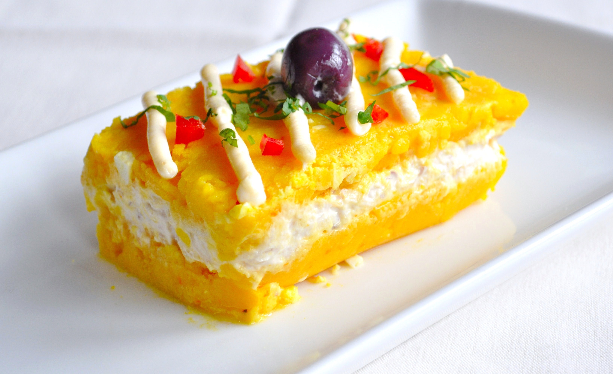

Gastronomia
Una receta no tiene alma, es el cocinero,quien debe darle alma a la receta
Ceviche

El ceviche es un plato típico de la gastronomía latinoamericana en general, teniendo cada país su particular estilo de preparación. En esta receta de RecetasGratis.net queremos enseñarte la elaboración tradicional de Perú, así que toma nota y aprende a preparar un delicoso ceviche peruano.
Instrucciones | 30 minutos
1
Lo primero que debes hacer para poder elaborar el ceviche peruano es exprimir los 12 limones para extraer su jugo, resérvalo para más adelante. Luego, corta el pescado en trozos de 3 centímetros, aproximadamente. Coloca los trozos en el recipiente que vayas a utilizar para servir el plato.
2
Mezcla el pescado con el ají mirasol picado, el jugo de jengibre, el caldo de pescado y el apio picado. Déjalo reposar unos minutos para que se marine bien e impregne de todos los sabores.
3
Hecho esto, coloca la cebolla cortada en julianas y el ajo machacado sobre los trozos de pescado marinado. Salpimenta al gusto y coloca a un lado del plato el camote sancochado, la lechuca y el maíz tierno también hervido.
4
Después, vierte el zumo de limón por todo el plato de manera que quede todo bien cubierto. Por último, corta una lámina de ají limo rojo y colócala a modo de decoración. Resérvalo en el frigorífico para que se enfríe, puesto que este es un plato que se sirve frío.
5 El ceviche peruano es un plato que actúa como aperitivo, por lo que puedes acompañarlo con un arroz con camarones o un delicioso salmón con salsa de gambas.
6
Si te ha gustado la receta de Ceviche peruano, te sugerimos que entres en nuestra categoría de Recetas de Ceviches o déjate sorprender en nuestro Recomendador de recetas.También puedes visitar una selección de las mejores recetas peruanas.
Causa rellena

La causa es un plato típico y representativo de la gastronomía peruana, con muchas variaciones en cuanto a sus ingredientes. Es de origen precolombino, pues era preparado antiguamente con papa amarilla, la cual tiene textura suave y ají triturado.
PREPARACIÓN
Hervir las papas con sal y media tajada de limón, cuidando que no se deshagan al cocinarse.
Para pasarlas fácilmente por el prensapapas, hay que pelarlas y pasarlas por el mismo lo más caliente que sea posible. Dejar enfriar.
Cuando la papa prensada está fría agregar sal en cantidad necesaria, el jugo de limón, aceite y el ají licuado, mezclar todos los ingredientes probando el sabor, si se nota que la masa está muy seca agregar aceite y un poco del caldo obtenido de sancochar la pechuga hasta obtener una masa maleable y que no se desmorone al trabajarla.
En un recipiente extender la mitad de la masa, aparte mezclar el pollo con la mayonesa y extenderlo encima a manera de capa, con la otra mitad cubrir este relleno, prensando un poco al hacerlo. Decorar con huevo aceitunas, tomate, el perejil finamente picado y las hojas de lechuga.
Otra forma de presentarlo es a manera de pionono, para ello extienda sobre una hoja de plástico toda la masa, sobre ella el pollo y proceder a enrollar, ayudándose con la hoja de plástico, una vez formado el rollo decorar de la misma manera.